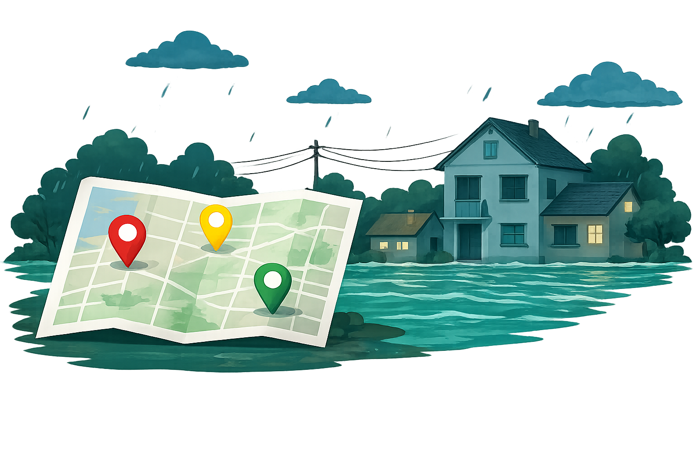

Peta / Area Rawan
Pantau wilayah rawan banjir di sekitar anda. Lihat tingkat risiko dan area yang berpotensi terdampak untuk kewaspadaan lebih dini.

Pantau wilayah rawan banjir di sekitar anda. Lihat tingkat risiko dan area yang berpotensi terdampak untuk kewaspadaan lebih dini.
Peta berikut merupakan sebaran wilayah rawan banjir berdasarkan tingkat risiko
Wilayah dengan potensi banjir tinggi. Sering terjadi genangan / banjir.
Wilayah dengan potensi banjir Sedang. Dapat terjadi saat hujan lebat.
Wilayah dengan potensi banjir rendah. Relatif aman namun tetap waspada.
Ringkasan wilayah dan jumlah titik rawan banjir di Kabupaten Bandung
| Kecamatan | Tingkat Risiko | Jumlah Titik Rawan | Status Terdampak | Keterangan |
|---|---|---|---|---|
| Baleendah | Risiko Tinggi | 28 | Sering Terdampak | Genangan > 70 cm saat hujan lebat |
| Dayeuhkolot | Risiko Tinggi | 25 | Sering Terdampak | Dekat aliran Sungai Citarum |
| Bojongsoang | Risiko Sedang | 18 | Kadang Terdampak | Genangan 30 - 50 cm |
| Rancasari | Risiko Rendah | 10 | Jarang Terdampak | Drainase baik, dataran lebih tinggi |
*Data bersumber dari BPBD Kabupaten Bandung dan diperbarui secara berkala